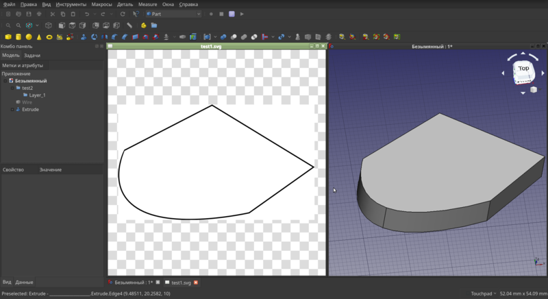

Решение проблемы импорта чертежей из Inkscape во FreeCAD

Есть два приложения для linux, которые мне очень нравятся - это Inkscape и FreeCAD. Первый - двухмерный редактор векторной графики. Второй - трёхмерный редактор, который я часто использую для создания моделей, затем отправляющихся на 3d печать. Оба OpenSource и оба хороши тем, что портированы в том числе под Windows и MacOS. И вот, ещё во времена debian седьмой версии не было никаких проблем, чтобы из поставляющегося в составе дистрибутива Inkscape что-то экспортировать в DXF и открыть это во FreeCAD. Точнее, импортировать было можно, но после импорта мы получали множество объектов типа Polyline и Spline, которые затем объединялись и могли быть конвертированы в четрёж, т.е. в Draft. С какой-то версии FreeCAD при попытке перевода объединения линий в чертёж, создавались пустые чертежи в том случае, если среди линий были кривые, т.е. объекты типа Spline. Я долго страдал по этому поводу, ведь есть вещи, которые куда удобнее и приятнее нарисовать в Inkscape и затем импортировать во FreeCAD, чем рисовать непосредственно во FreeCAD'е. Всё дело в том, что в Inkscape намного удобнее реализован инструмент работы с кривыми Безье, направляющими и сеткой.
Быстрая разблокировка старых 3g модемов под linux

Я просто оставлю это здесь, как памятку, возможно ещё пригодится. Подобных мануалов масса, но в основном они ориентированы на наличие windows, в linux это оказалось даже проще. У меня есть отдельная коробочка, куда я складывал попадающие ко мне 3g/4g модемы на случай, если мне они понадобятся в будущем. И вот, сегодня я нашёл этот ящик пандоры и он оказался очень кстати. Среди прочих моделей, отыскался один Huawei e1550 от Мегафон. Одна из лучших в своё время моделей, легко поддавалась перепрошивке, можно было использовать как SIP транк и вообще, делать с ним что угодно. Но естественно, он был залочен на использование симкарт от мегафона. Всё, что нам потребуется - браузер, консоль и пакет minicom (sudo apt-get install minicom, в случае, если вы пользуетесь debian-based системой).
Теги: linux
О правильной остановке внешних дисков и победившей контейнеризации

Надо оставить тут заметку, чтобы не потерять. Возникла у меня проблема - накрылась в очередной раз от периодических отключений питания и отсутствия бесперебойника файловая система на домашнем сервере. Можно было конечно восстанавливать её работоспособность, но объективно было пора переходить на новую. Так как сервер в своё время стоял под телевизором и какое-то время выполнял роль ТВ приставки с Kodi и прочей мультимедией, то на сервере было много всего лишнего, поэтому наиболее идеологически верным было поставить всё с нуля и перенести лишь необходимое. До этого я пользовался proxmox, но уже давно мне не нужны были честные виртуальные машины (а когда они будут нужны, проще на рабочей машине поднять виртуалку в VirtualBox), а все необходимые мне сервисы я давно перенёс в докер.
Теги: админское, docker, hardware, linux, soft
Правильное отключение SWAP раздела в Linux Mint
До того, как я купил себе ноутбук, я предварительно искал информацию о том, с какими проблемами мне придётся столкнуться при установке линукса. Судя по тому, что я нашёл, мне светило пропатчить модуль ядра для того, чтобы заработал тачпад и собрать модуль драйвера Wi-Fi из исходников. Это конечно, совершенно не rocket science, но со временем начинаешь ценить время и удобство, хочется побольше вещей, которые просто работают, работают хорошо и из коробки.
Последние лет шесть я работал на самосборном дистрибутиве на базе debian. И всё было бы ничего, но поддержка этого дистрибутива в актуальном состоянии требовала периодических усилий и существенных затрат времени. Так как debian stable имеет далеко не самую свежую пакетную базу, то заморочек с железом ожидалось больше, чем обычно. Так как у меня уже был положительный опыт установки Linux Mint, я взял последнюю версию 19.1 Tara с xfce4, накатил на ноутбук и - о чудо - всё заработало. Абсолютно всё - тачпад, звук, wi-fi, видео. При всём этом установка заняла в общей сложности всего минут пять.
Установка порта Heroes of Might and Magic 3 на linux Mint

Жена давно хотела поиграть в Heroes of Migth and Magic III (далее HOMM3), так как играла в это много лет назад и третьи герои вызывают её ностальгические чувства. Я знаю, что есть порт под linux, но на retropie мне его собрать так и не удалось - были проблемы с зависимостями и версиями библиотек, лишь впустую потратил несколько часов времени. Но не так давно я поставил под телевизор новый китайский неттоп и накатил на него последний минт, как раз для того, чтобы не было проблем со всякой мультимедией, так как в отличие от дебиана, построенного из минимального chroot, там множество вещей работает из коробки. Да и не за чем мучать любимого человека, тайловый i3 и консоль ей не нужны.
Оказалось, что VCMI уже есть в репозитории и его даже не нужно собирать, нужно лишь настроить. Я перепробовал несколько разных сборок и образов HOMM3, (есть купленная копия в GOG, но она английская, а хотелось русскую версию), поэтому сразу расскажу о рабочем варианте с руссификацией и работой в нативных разрешениях экрана.
Теги: linux, games, ностальгия
Про эволюцию хранения заметок.

Ко многим вещам, как и ко многому софту, которым я в текущий момент пользуюсь постоянно, меня приводил долгий эволюционно-эмпирический путь. Таким долгим путём прошли ножи, фонари, идут одноплатные компьютеры, домашний сервер, роутеры, клавиатуры, пульты дистанционного управления, множество скриптов и чёрт знает, что ещё. Сегодня я расскажу о том, как я решал проблему хранения заметок, а впоследствии - проблему иерархического хранения заметок.
Во времена школы всё было просто - записная книжка и ручка. Требований к записной книжке немного - удобные габариты, практичная обложка, да и всё пожалуй. Когда дело доходит до хранения заметок в виде данных, сразу появляется море хотелок и требований. И чтобы поиск работал и чтобы ссылки были (в том числе перекрёстные) и теги желательно и вложения и чтобы открывалось это везде и т.п.. Вполне можно проследить эволюцию подобных приложений по мере того, как я менял одно на другое.
Пингвин с человеческим лицом

На линуксе я сижу давно и прочно, уже лет 14 или около того, но со временем поумнел и уже не пытаюсь переманить кого бы то ни было в свой лагерь. Каждый инструмент создан для решения определённых задач, у каждого человека есть свой собственный уровень консерватизма, свой уровень привычки к тому или иному инструменту и, как следствие, свой уровень желания либо, что бывает чаще - нежелания пробовать что-то новое, а насильно, как говорится, мил не будешь.
Теги: linux
Протрите призму восприятия, это расширит кругозор


Не так давно в MacOS X с одним из обновлений приехала тёмная тема оформления. Ну тема и тема - подумалось мне - что ж в этом такого удивительного? Под тот же линукс тем оформления окон а-ля MacOS X, только в тёмном варианте вагон и маленькая тележка уже много лет, под винду думаю, тоже можно найти, если поискать. Ан нет, на некоторых форумах, в социальных сетях и на ютубе периодически встречаю посты пользователей MacOS, просто пропитанные восхищением этой тёмной темой. Похоже, тысячи людей неудержимо писают кипятком в связи с этим и я никак не мог понять, почему. В одном из постов я обнаружил фразу следующего вида: "это то, чего мы все так долго ждали". Как-то не соответствует такая бурная реакция значимости события, вы не находите? И с того самого момента мне казалось, что что-то мне эта ситуация напоминает, но я не мог вспомнить, что именно. Сегодня внезапно вспомнил. Цитата с башорга:
- Мне так нравится 10ка, там такая офигенная фича, можно делать виртуальные рабочие столы и на одном держать одни приложения, на другом другие, когда твой говнолинукс так сможет?
- М... Ну лет двадцать назад, где-то.
Вот, с восторгами о тёмной теме в MacOS примерно как-то так же. Ещё в этот список можно отнести например, магазин приложений в Win10, установку убунты в окружение Win (проекту WinE, использующемуся для симметричных целей в линуксе уже чёрт знает сколько лет). Думаю, если покопаться, то можно найти и ещё примеры. И каждый раз, когда какая-то привычная для тебя вещь приходит на другую платформу, подаётся это всё с такой помпой, будто её заново для этого изобрели. По крайней мере пользователи воспринимают это именно так и свято в это верят. Примерно как Американцы в исключительность своей нации - изнутри может быть оно так и выглядит, но снаружи это смешно. Почему-то по умолчанию человек считает операционную систему, которой он пользуется - лучшей. Не лучшей для него конкретно, а просто лучшей в принципе. Люди живут в рамках одной платформы, как в домике. Зачем пробовать что-то иное, если ты уже пользуешься лучшим из того, что изобрело человечество? Откуда и из каких углов сознания появляется это мнение об исключительности того, чем ты пользуешься? На что ещё оно распространяется при таком подходе? Где здоровое любопытство из разряда "а что там, за углом"? Гугл изобрёл андроид (привет тебе, Энди Рубин), Apple изобрела MaxOS (привет всем BSD системам), а дядя Гейтс изобрёл интерфейс Windows (привет фирме Xerox). Почему меня это всё так раздражает? Не знаю, наверное, по той же причине, по которой меня раздражают грамматические ошибки - не люблю невежество. В то же самое время я отдаю себе отчёт в том, что я во множестве других сфер такой же, если не бОльший невежда и наверное, кого-то это тоже очень раздражает. А возможно и то, что я излагаю сейчас, будет раздражать меня в будущем примитивностью формы и содержания - вполне вероятно.
Теги: linux, windows, macos, мысли-вслух